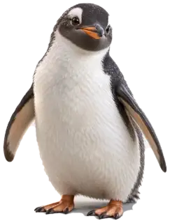
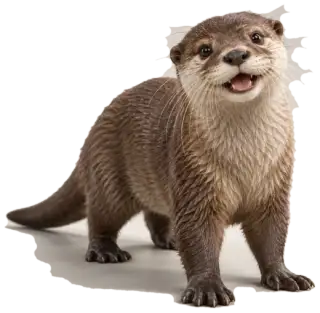
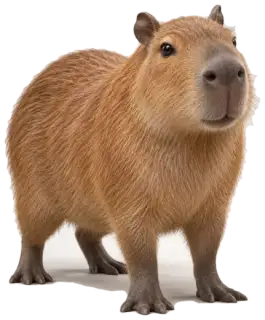
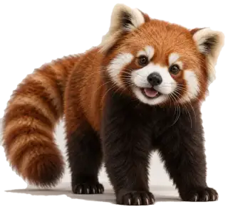

PENGUIN · CURIOUS
Pip
The cautious explorer. Loves tiny adventures, asks questions, and occasionally trips over nothing.
Four little companions. Four different minds. One shared desktop.
Meet a new generation of desktop companions: animals that wander, react, remember, and have their own voices.
Meet the pets →



Each pet runs its own behavior loop, keeps a separate interaction history, and responds differently to the same conversation. They can wander around a shared scene, nap, play, and follow your cursor.
The cautious explorer. Loves tiny adventures, asks questions, and occasionally trips over nothing.
The troublemaker. Collects imaginary treasures, asks to play, and has endless energy.
The peaceful thinker. Prefers slow strolls, quiet company, and thoughtful chats.
The clever climber. Has opinions on everything, loves puzzles, and makes funny remarks.
This release demonstrates the interaction system: pet-specific state, local chat memory, click-and-drag movement, individual needs and actions, and an autonomous roaming engine. The chat runs as a local personality simulation. The repository includes notes for connecting a language model later.
Independent wandering, pauses, head turns and pacing.
Pet-specific dialogue, moods, and interaction patterns.
Separate histories saved in the current browser.
All four roam together in one desktop scene.
NVIDIA Pets is a four-companion interactive browser runtime. It brings a penguin, otter, capybara and red panda together in one shared digital space, with separate conversation histories, movement goals, habits, and moods.
The release demonstrates client-side agent systems rather than a pretrained language model. Each companion follows its own behavior loop and responds through a local personality dialogue engine. The images are realistic 3D-style renders displayed as animated sprites, not rigged 3D meshes.
Each pet maintains an independent state containing position, destination, movement speed, energy, happiness, sleep state and follow mode. A shared animation loop advances each agent while retaining separate behavior decisions. The dialogue engine selects pet-specific responses from local rules.
PetAgent
├── Character: Penguin | Otter | Capybara | Red Panda
├── Autonomous navigation and idle behavior
├── Personality-specific dialogue
├── Energy, happiness and sleep state
├── Separate local conversation history
└── Input actions: Feed, Play, Nap, FollowOpen the interactive playground directly in a browser, or clone the source project and run a local HTTP server. No GPU or inference token is required for the prototype.
git clone https://github.com/ClaudeAIOfficial/huggingface-clone.git
cd huggingface-clone
python -m http.server 8000
# Open http://localhost:8000/nvidia-pets.htmlconst pet = {
id: "penguin",
name: "Pip",
personality: "curious",
motion: "wander",
memory: "localStorage",
actions: ["feed", "play", "nap", "follow"]
};Training: No proprietary or NVIDIA-trained foundation model is included in this repository. The dialogue layer uses predefined local personality patterns. Model training statistics and inference benchmarks are therefore not applicable to this version.
Verification: The web runtime can be checked for four simultaneously visible pets, independent roaming, distinct chat histories, individual actions and mobile layout behavior.
Modern desktop or mobile browser with JavaScript enabled. No installation is needed to use the hosted demo. To deploy your own copy, serve these static files from Vercel, GitHub Pages, or any static file host.
Source files and documentation ↗
Dialogue is a browser-local simulation and should not be presented as unrestricted language-model intelligence. The demo does not access real microphones, control your operating-system desktop, or save conversations to a server. Pet sprite motion is 2D with 3D-rendered imagery. Browser storage can be cleared at any time.
Future integrations can add language-model responses, synthesized voices, better skeletal 3D animation, persistent accounts, and real desktop overlays. The current release is a browser prototype, with 3D-rendered sprites rather than rigged 3D meshes.
Click a pet to chat. Drag it to a new spot, or let everyone roam.
Chat responses use local personality rules. A language-model connection can be added separately.
The original source files and commit history are available through the links above. Images open directly from this site.
Discuss ideas, request new pets and share feedback.
NVIDIA Pets explores expressive animal companions living together in a shared digital environment. Each character has its own behavior state and interactive dialogue.
Client-side HTML, CSS and JavaScript power the demo. Four independent pet objects handle navigation, energy, happiness, action selection and local conversation history. The current responses are deterministic personality scripts, not inference from a trained pet language model.
This is an independently built digital-pet project. NVIDIA has not announced, developed or endorsed it.